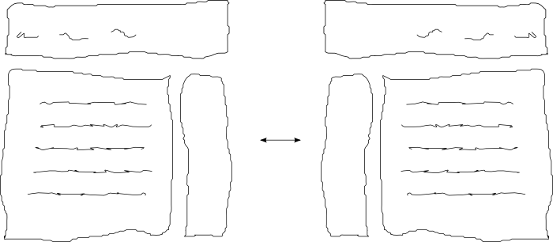

Right to left, Internationalization and localization of web and Django apps
Hello world, מה שלומך today ?
שלום עולם, how are you היום ?
right-to-left interfaces
#@%@#%!!#@$%#@%
Adapt to various locales and regions:
| 12.23.2009 | 23.12.2009 |
| -1,234.56 | -1.234,56 |
With CSS and overriding. Don't hardcode:
<div style="margin-left: 10pt">
Instead:
<div class="with-margin">
.with-margin { margin-left:10pt }
.rtl .with-margin {
margin-left:0; margin-right: 10pt
}
Sheet for one direction, override in another.
/* myapp.css */
.with-margin { margin-left:10pt }
/* myapp_rtl.css */
.with-margin { margin:0 10pt 0 0 }
in html pseudo code
<link href="myapp.css" />
<link href="myapp_rtl.css" /> <!-- if bidi -->
Single css file and attribute selectors:
<html xmlns="http://www.w3.org/1999/xhtml"
lang="he" xml:lang="he" dir="rtl">
in css:
.with-margin { margin-left:10pt; text-align:left }
html[dir=rtl] .with-margin {
margin:0 10pt 0 0;
text-align: right
}
IE6 sucks, no attribute selectors - single css file utilizing class selectors:
<body class="with-rtl">
in css:
.with-margin { margin-left:10pt }
body.with-rtl .with-margin { margin:0 10pt 0 0 }
Provide mirrored images for RTL, override in stylesheet and templates:
<div class="arrow">Hello</div>
Hello
שלום
שלום
Finally 2 html entities, ‏ and ‎ to enforce direction on neutral characters.
{{ user }}, {{ date_published }}
What happens when all text in an element is in the other direction ? See the list:
The comma and space are neutral, direction markers force desired direction, e.g for RTL:
{{ user }}‏, {{ date_published }}
Now ordering is correct:
LANGUAGE_CODE = 'he' # default language
USE_I18N = True # default
TEMPLATE_CONTEXT_PROCESSORS = (
"...",
"django.core.context_processors.i18n",
"...",
) # default
To disable i18n:
USE_I18N = False # short-circuit translations
Always mark text for translation, even if single language app right now.
If text isn't translated, it'll fall back to the string itself.
{% trans "Hello" %} {{ username }}
Without translation {"username":"foo"}:
Hello foo
Simple strings
{% load i18n %}
{% trans "Hello" %} {{ user }}
Text with variables
{% load i18n %}
{% blocktrans %}
Hello {{ user }}, last login at {{ login_date }}.
{% endblocktrans %}
Single and plural
{% load i18n %}
{% blocktrans %}
You have {{ incoming.count }} new message.
{% plural %}
You have {{ incoming.count }} new messages.
{% endblocktrans %}
ugettxt_lazy() vs ugettext()
from django.utils.translation import \
ugettext_lazy as _
from django.db import models
class page(models.Model):
title = models.CharField( _('Title'),
max_length=20,
help_text=_('Page title')
)
class Meta:
verbose_name = _('Page')
verbose_name_plural = _('Pages')
from django.utils.translation import ugettext as _
def welcome(request):
msg = _('Welcome back')
return HttpResponse(msg)
@login required
def welcome_with_name(request):
msg = _('Hello %(name)s, welcome back') % \
{ 'name': request.user }
return HttpResponse(msg)
Create and update message files
A locale dir is required, recommended in the app dir.
$ django-admin.py makemessages -l he
By default uses html extension for templates, can specify others:
$ django-admin.py makemessages \
-e html,txt,xml -l he
Compile message files
$ django-admin.py compilemessages -l he
Reload the server
Django's dev server won't reload after compiling, restart it for your sanity.
Some reusable apps for multilingual and bidi sites
django.views.i18n.set_language changes active language with POST.
OTH littering urlconf with language selectors is messy, non DRY
url('^(?P<lang>he|en)/contact-us/$', )
django-localeurl provides a middleware which:
Plus:
django-multilingual provides database translations
class Category(models.Model):
parent = models.ForeignKey('self', \
blank=True, null=True)
class Translation(multilingual.Translation):
name = models.CharField(max_length=50)
def __unicode__(self):
"Returns correct name for active lang"
return self.name
django-bidi-utils, language direction related context processor and filter. Before:
<html dir="{{LANGUAGE_BIDI|yesno:"rtl,ltr"}}">
After:
<html dir="{{LANGUAGE_DIRECTION}}">
Read the Django i18n docs
Questions ?
Contact me for further questions
Thank you